Ugochukwu Okonkwo
M.S. Biomedical Engineering | MBA
Medical Device R&D • Product Development • Manufacturing Engineering • Quality Engineering • Product & Project Management
Download Resume LinkedIn
Medical Device R&D • Product Development • Manufacturing Engineering • Quality Engineering • Product & Project Management
Download Resume LinkedInBiomedical Engineer with an M.S. in Biomedical Engineering and MBA, experienced in medical device product development, design verification and validation, CAD design, rapid prototyping, manufacturing support, usability engineering, and quality systems.
My background spans orthopedic device development, assistive technology design, and tissue engineering research. I am interested in designing, developing, and improving medical devices that solve real clinical, manufacturing, and usability challenges.
January 2024 – August 2024
Graduate research project focused on redesigning a traditional assistive button hook to improve comfort, usability, and functional performance for individuals experiencing dexterity impairments. The project utilized a human-centered design process involving clinician collaboration, ergonomic evaluation, concept development, rapid prototyping, fixture design, and usability testing.
Skills Demonstrated: Human-Centered Design, Ergonomics, Medical Device Product Development, CAD Modeling, 3D Printing, Rapid Prototyping, Usability Engineering, Design Iteration, Concept Development, Fixture Design, CO₂ Laser Cutting, Experimental Testing, Stakeholder Collaboration, Assistive Technology Design
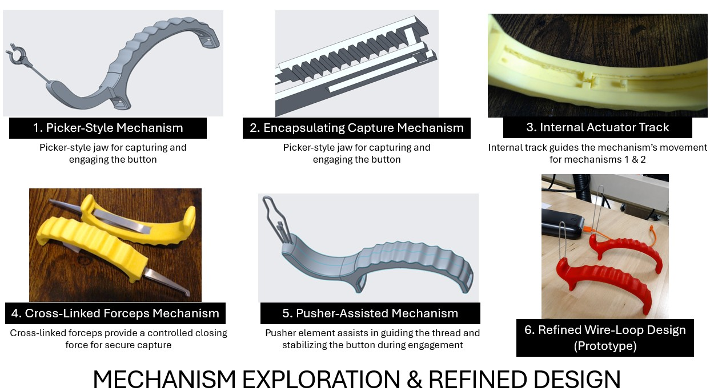
Early-stage concept exploration including picker-style, scroll-assisted, cross-linked forceps, and refined wire-loop design evaluated during design development.
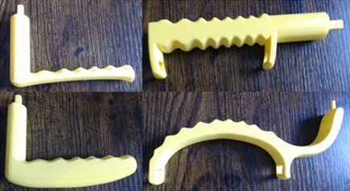
Multiple ergonomic handle concepts developed and evaluated through iterative prototyping and clinician feedback.
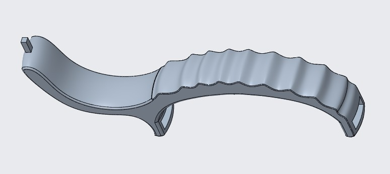
CAD model of the selected ergonomic handle developed through multiple design iterations and usability evaluations.
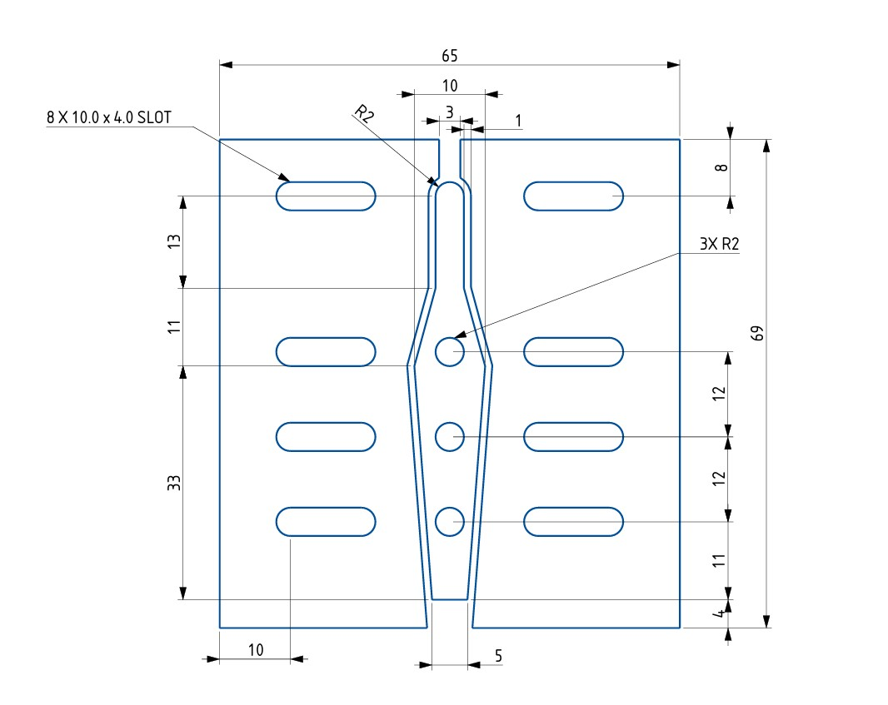
Engineering drawing used to fabricate the custom wire-forming jig for manufacturing spring-wire components.
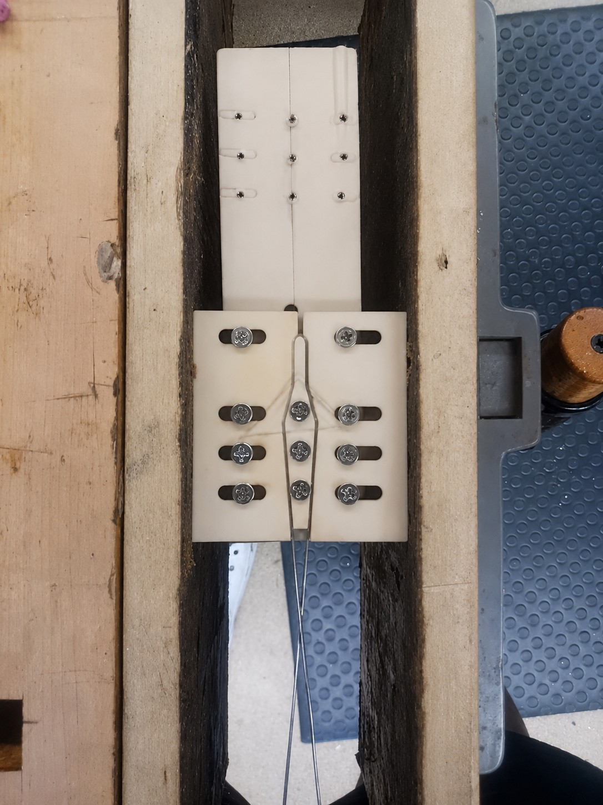
CO₂ laser-cut wire-forming jig used to accurately manufacture spring-wire mechanism components.
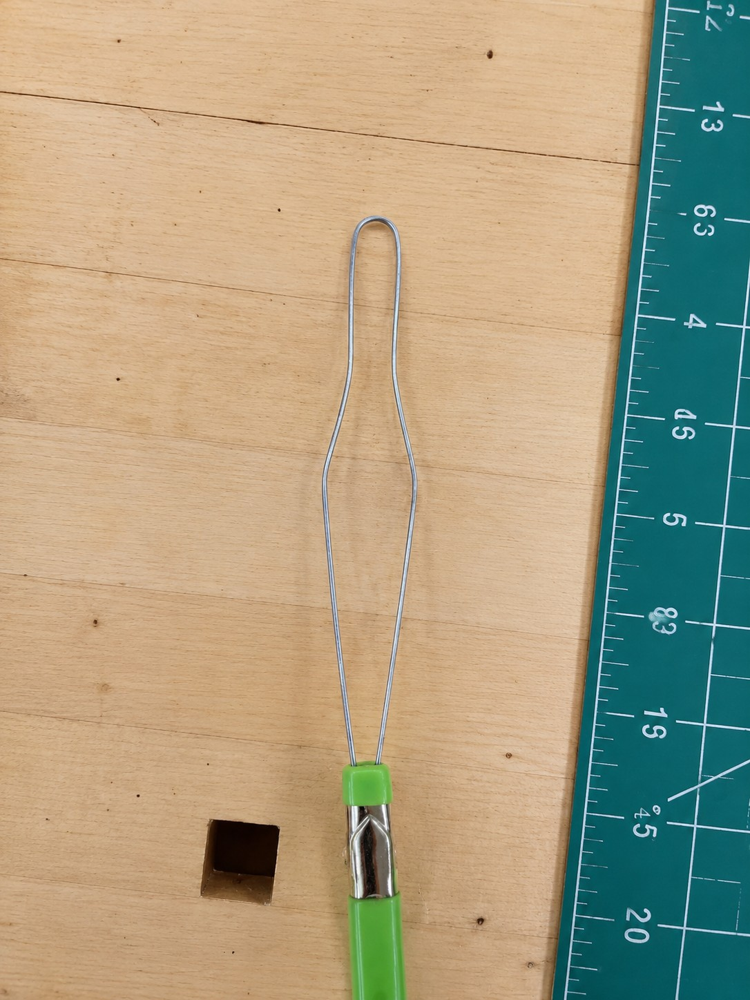
Custom spring-wire mechanism fabricated using the wire-forming jig and integrated into prototype assemblies.
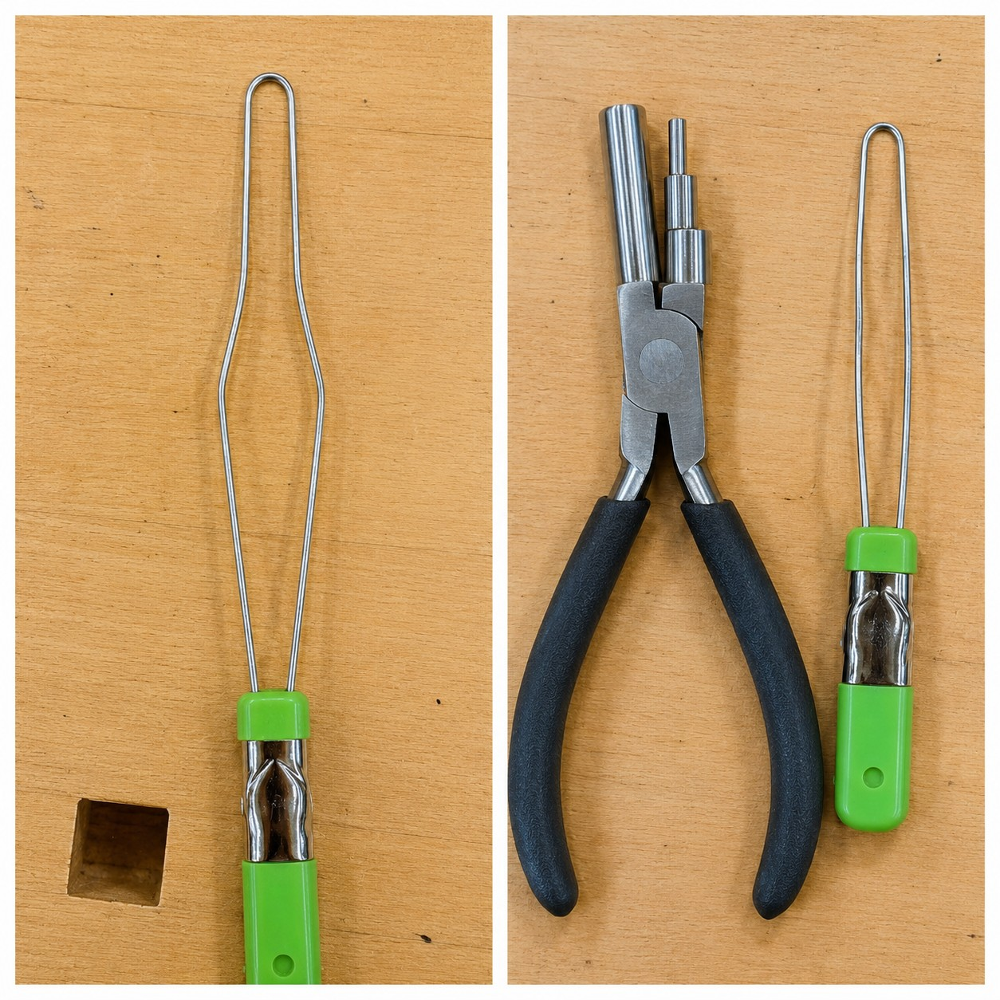
Comparison of two alternative mechanism configurations evaluated for usability, actuation force, and thread-capture performance.
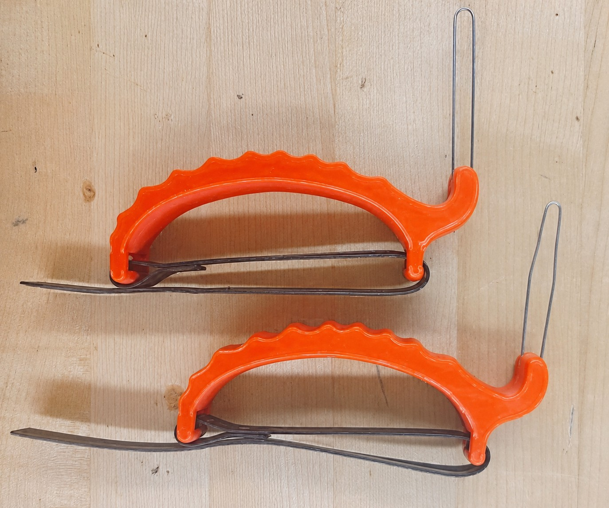
Final assistive button hook prototype developed through human-centered design and iterative prototyping.

Usability testing conducted to evaluate comfort, effectiveness, ease of use, and overall user satisfaction.
Undergraduate Senior Design Project focused on the design, fabrication, integration, and validation of a low-cost electrospinning platform capable of producing both aligned and random polymeric nanofibers for tissue engineering applications.
Skills Demonstrated: Systems Engineering, CAD Design, Mechanical Design, Design for Manufacturing, Design for Additive Manufacturing, 3D Printing, Rapid Prototyping, Manufacturing & Assembly, Motion-Control Integration, Experimental Testing, Process Optimization, Safety Engineering, Product Development
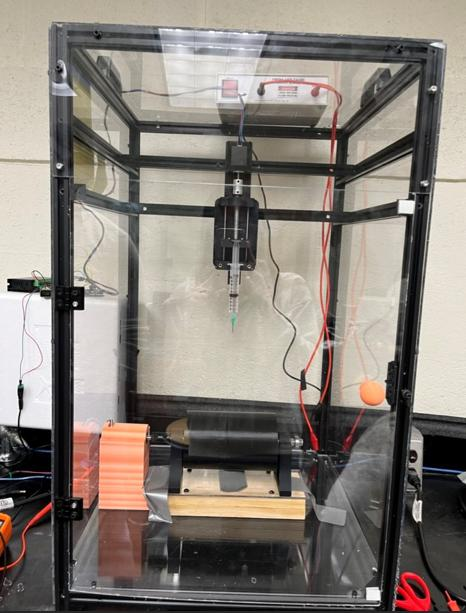
Completed electrospinning system with acrylic enclosure, aluminum frame, syringe pump assembly, rotating collector, and integrated controls.
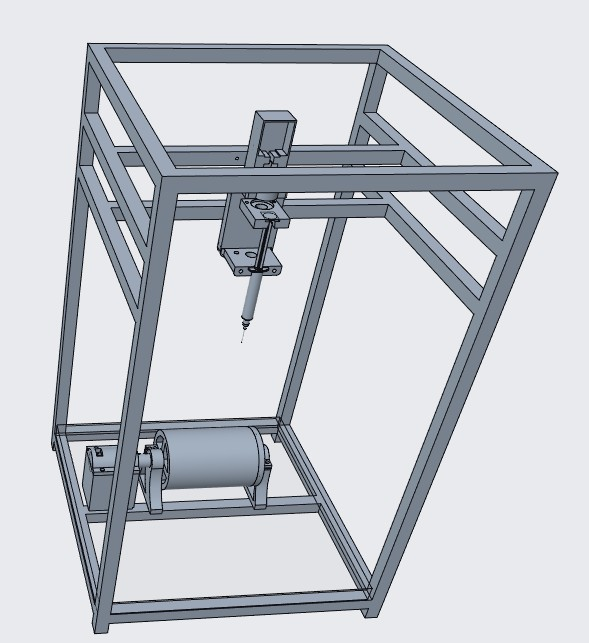
Full CAD assembly showing the system layout, enclosure, syringe pump, rotating collector, and component integration.
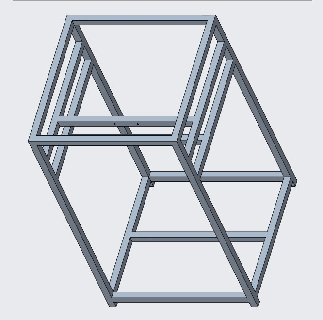
CAD design of the aluminum-frame and acrylic-panel enclosure used for system safety, structure, and accessibility.
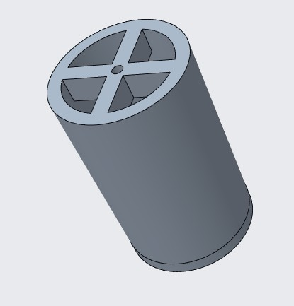
Custom 3D printed rotating drum collector used to generate aligned nanofibers through controlled rotational motion.
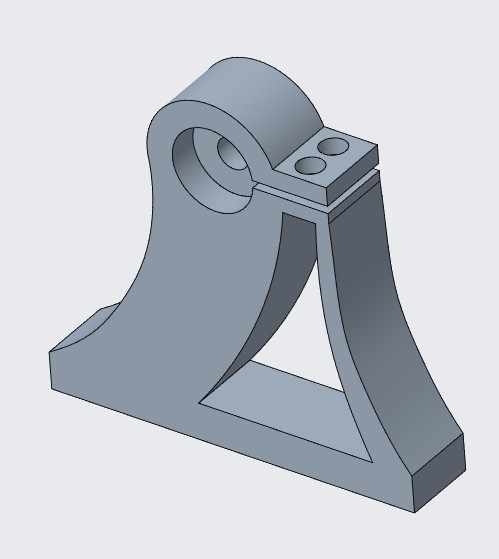
Custom motor holder designed to secure and align the motor controlling the rotating drum collector.
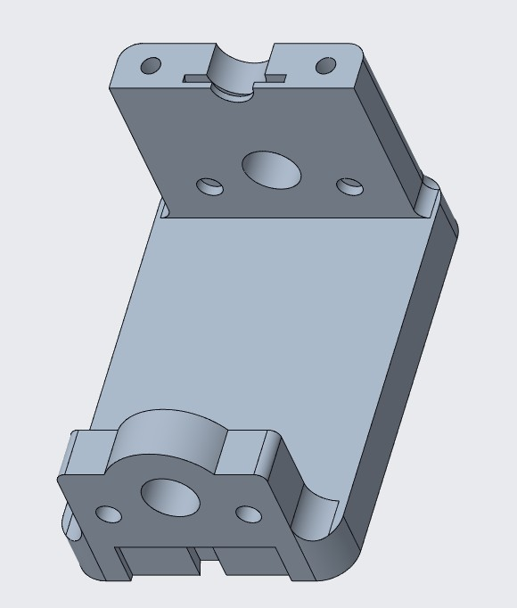
3D printed syringe pump base designed to support the syringe delivery system and improve assembly stability.
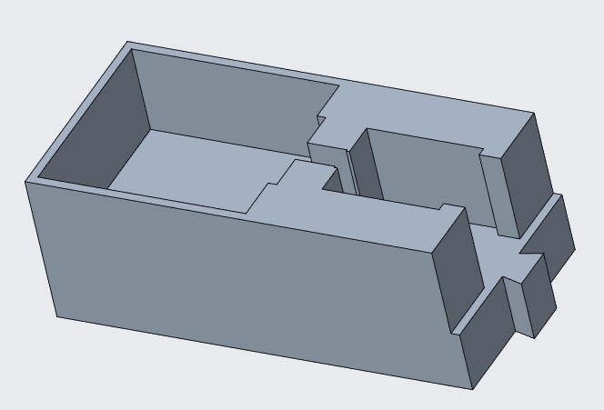
Custom syringe motor holder used to support controlled polymer delivery through the syringe pump assembly.
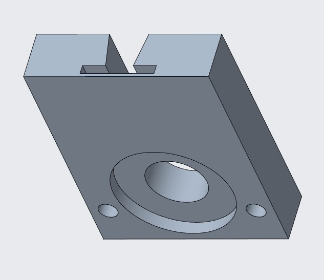
Syringe pusher mechanism designed to translate motor motion into controlled syringe plunger displacement.

Engineering drawing package created to support fabrication, assembly, and documentation of custom system components.
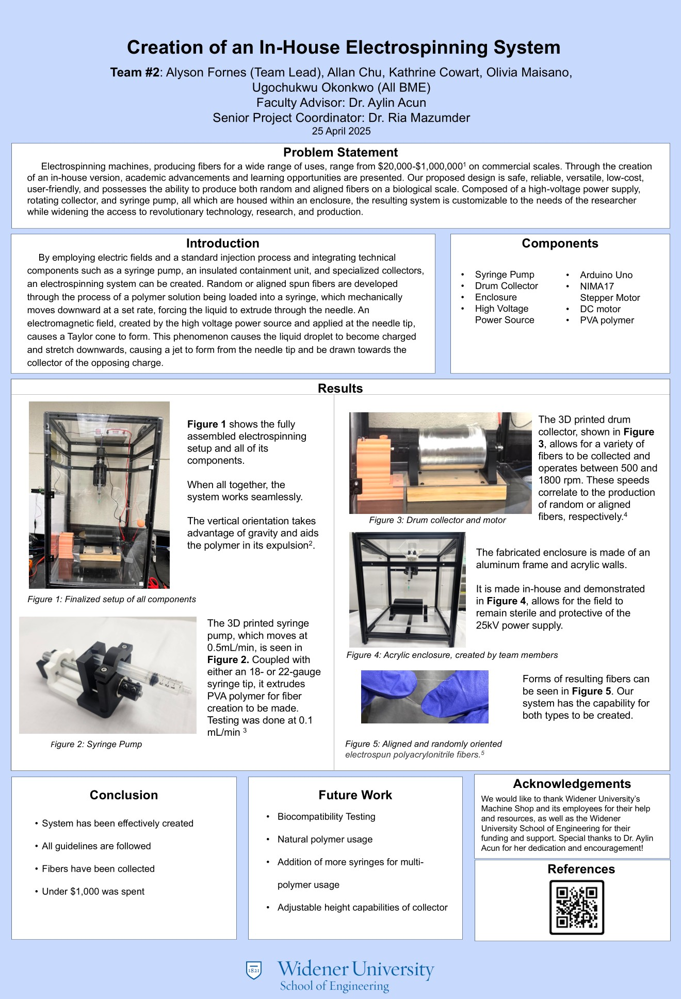
Senior design poster summarizing system architecture, design process, fabrication, testing, results, and future work.
Developed and refined functional prototypes using additive manufacturing techniques for medical device, assistive technology, and engineering design projects.
Design Verification & Validation, Human-Centered Design, Usability Testing, Design Controls, Risk Management, Quality Systems
Creo Parametric, SolidWorks, Autodesk Inventor, Engineering Drawings, GD&T, Design for Manufacturing, Rapid Prototyping, 3D Printing
Lean Six Sigma, DMAIC, Root Cause Analysis, Process Improvement, Fixture Design, Prototype Development, CO₂ Laser Cutting
ANSYS Fluent, Thermal & Bioheat Modeling, Mesh Independence Studies, MATLAB
FMEA, CAPA, Complaint Investigation, Change Management, Documentation Control, FDA Quality Systems
Excel, Pivot Tables, Regression, Data Analysis ToolPak, SQL, Tableau, ROS2
Bradford Assay, Protein Extraction, Aseptic Laboratory Practices, Biosafety Procedures
Master of Science, Biomedical Engineering
2026
Master of Business Administration (MBA), Business Management
2026
Bachelor of Science, Biomedical Engineering
Minors in Management, Robotics Engineering, Mechanical Engineering, and Mathematics